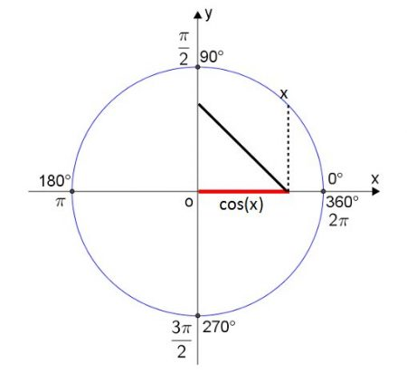
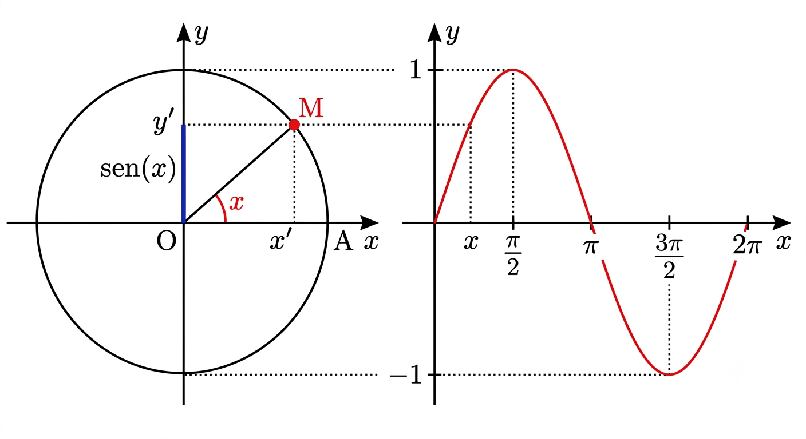

As funções trigonométricas são relações matemáticas que surgiram do estudo das relações entre os lados e os ângulos dos triângulos. Inicialmente, foram desenvolvidas no triângulo retângulo e, posteriormente, estendidas para o círculo trigonométrico e para os números reais.

As funções trigonométricas permitem resolver problemas práticos, e são fundamentais para áreas como engenharia, astronomia e outras ciências exatas, além de modelarem fenômenos periódicos, como o movimento dos planetas, as estações do ano e a alternância entre dia e noite.

Seno (f(x)=sen x): relaciona o cateto oposto com a hipotenusa em um triângulo retângulo e representa a coordenada vertical de um ponto no círculo trigonométrico.Varia de -1 a 1
Cosseno (f(x)=cos x): relaciona o cateto adjacente com a hipotenusa e representa a coordenada horizontal no círculo trigonométrico.Varia de -1 a 1
Tangente (f(x)=tg x): corresponde à razão entre o seno e o cosseno (ou entre o cateto oposto e o cateto adjacente), sendo utilizada para determinar inclinações e calcular alturas e distâncias.
Periodicidade: as funções trigonométricas se repetem em intervalos regulares, como 2π para seno e cosseno.
Definição no círculo trigonométrico: as funções podem ser representadas no círculo unitário, ampliando seu estudo para qualquer ângulo ou número real.
Uso de graus e radianos: os ângulos podem ser medidos em graus ou radianos, sendo o radiano a unidade mais adequada para cálculos trigonométricos mais avançados.
Imagem: Conjunto de todos os valores que a função pode assumir no eixo vertical.
Arthur Fellipe da Luz Santana, Lázaro Mendonça Mota da paz, Mayra Santos Marçal, Rai Cleidson Conceição de Paula, Thaylla Santos Argolo